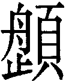

10  履卦 天澤履
履卦 天澤履
履虎尾，不咥人，亨。初九，素履，往无咎。九二，履道坦坦，幽人貞吉。六三，眇能視，跛能履，履虎尾，咥人凶。武人為于大君。九四，履虎尾，愬愬，終吉。九五，夬履，貞厲。上九，視履，考祥其旋，元吉。
【卦名】
今本：履 帛書：禮 歸藏：履 秦簡：履 清華簡： 海昏：履
「履」帛書《周易》作「禮」，帛書易傳則作履。禮者履也，履者禮也。《清華簡》的即𩕎，古文字「止」通「足」，和𩕎都是履的古文。
因此履卦的卦名從出土資料到今本，一致都通「履」。
《說文》履作𡳐：「足所依也，从尸，服𡳐者也。从彳夊，从舟象𡳐形。」「𩕎，古文𡳐，从頁从足。」段注：「古曰屨，今曰𡳐。」「引伸之訓踐，如君子所𡳐是也。又引伸之訓祿，《詩》福𡳐綏之《毛傳》曰：𡳐，祿也。又引伸之訓禮，《序卦傳》、《詩》長發傳是也。禮爲疉韵，祿爲雙聲。」
依段注，履原本是鞋子（足所依也），通「屨」，引申為踐履，意指人所當行者。又引申為「福祿」的祿，此《爾雅》所說的「祿，祉，履…福也」，「履，祿也」。又引申為禮，《爾雅》「履，禮也」。
《周易》中的履則兼具履之原義和引申義，可作「踐履」，如「履虎尾」；也可作「禮」，如《序卦》傳說：「物畜然後有禮，故受之以履。」甚至亦可作鞋子解，如「素履」，是樸素無華的鞋子。但任何卦辭都不宜以單一意思來做解釋，如「素履」亦有「素禮」之義。
【卦義】
禮、履行，禮節和規矩，如履薄冰。
履原為鞋子的意思，引申為履行，踐履。再引申到道德上，意指行為所當踐履的，也就是禮。因此履也解釋作禮，馬王堆出土的帛書《周易》卦名即作禮。禮者履也，履者禮也，履禮兩字互通。
《禮記．樂記》：「禮也者，理之不可易者也。樂統同，禮辨異。」「樂者為同，禮者為異。同則相親，異則相敬。樂勝則流，禮勝則離。合情飾貌者禮樂之事也。禮義立，則貴賤等矣；樂文同，則上下和矣。」
禮以辨異，也就是辨別人與人之間地位的差別，明君臣、父子、夫婦、長幼之序，這也是《象傳》說的：「上天下澤，履，君子以辯上下，定民志。」別異之道則在敬。因此履道重在敬，全卦爻辭亦以敬之與否定吉凶。
得此卦者凡事要有如履虎尾、如履薄冰的敬畏謹慎之心，依禮而行，《尚書‧君牙》穆王所說：「心之憂危，若蹈虎尾，涉於春冰。」否則惹到老虎咬人。卦辭以「履虎尾」釋義，雖然情勢險惡，但若能小心翼翼，而能讓老虎不咬人，事情也可亨通。
《彖》傳說：「履，柔履剛也。說而應乎乾，是以履虎尾，不咥人，亨。」「柔履剛」指六三一個陰爻在兩個陽爻之上。而「說而應乎乾」則是以二體卦德做為因應之道，以喜悅的態度（下卦兌澤為悅）呼應上面之乾陽。
卦象下兌為毀折、澤險，上為乾陽君子，君子陽剛履險之象。兌為口，為虎，故曰「虎」曰「咥」。兌為向下毀折，乾剛在上未能受害，因此不咥人。反之，若兌卦在上，乾陽在下，則兌欲傷陽，畜積在內的乾陽陽氣增長，與其對決，是為「夬」卦，夬者決也。
《序卦》說：「物畜然後有禮，故受之以履。」卦序上履卦與小畜為相綜的對卦，是繼師、比兩卦而來。卦序發展到比卦為人民聚集，萬邦來朝，小畜為畜養小邦；進入履卦則是開始教民以禮儀，使民知君臣、上下、長幼之分際。
履卦的旁通卦為謙，《繫辭下》：「履，德之基也。謙，德之柄也。」「履，和而至。謙，尊而光。」「履以和行，謙以制禮。」履與謙可以說互為表裡，一體兩面，謙卦為虛心於內，履卦則為實行於外。
王弼：「《雜卦》曰：履不處也。又曰：履者禮也。謙以制禮，陽處陰位，謙也。故此一卦，皆以陽處陰為美也。」王弼意思為，禮當以謙虛來制約，因此六爻以陽處陰位為吉，因陰位為虛為卑。例如九二「幽人貞吉」，九四因驚恐而「元吉」；反之六三以陰而居陽位，乃凶中之凶，因此「履虎尾，咥人凶」，是六爻中最凶險的一爻；就連九五之尊，也因高居貴位而「貞厲」。
《三國志‧管輅傳》：吏部尚書何晏請之，鄧颺在晏許。晏謂輅曰：「聞君著爻神妙，試為作一卦，知位當至三公不？」又問：「連夢見青蠅數十頭，來在鼻上，驅之不肯去，有何意故？」輅曰：「夫飛鴞，天下賤鳥，及其在林食椹，則懷我好音，況輅心非草木，敢不盡忠？昔元、凱之弼重華，宣慈惠和。周公之翼成王，坐而待旦，故能流光六合，萬國咸寧。此乃履道休應，非卜筮之所明也。」
此卦典故可能是古代鬥獸之儀式或活動，有如古羅馬之競技表演。而從整卦經文來看，「履虎尾」是整個活動的焦點，或有不夠眼明腳快者被老虎所咬，或有能馴服老虎者而得平安。
在商周出土的青銅器中，經常可見老虎噬人紋，甚至還有「虎食人卣」的青銅器，學者雖然對虎食人或虎噬人的題材多有猜測，但一直不得其解，或許履卦經文就是相關典故的記載。
圖說↓：現藏於中國國家博物館的「后母戊鼎」，或名「司母戊鼎」，鼎耳上的虎噬人紋，這種紋在商周的青銅器中經常可見。圖片來源：維基百科）


履虎尾，不咥人，亨。
- 彖曰：履，柔履剛也。說而應乎乾，是以履虎尾，不咥人，亨。剛中正，履帝位而不疚，光明也。
- 象曰：上天下澤，履，君子以辯上下，定民志。
- 繫辭下：◎履，德之基也。謙，德之柄也。 ◎履，和而至。謙，尊而光。 ◎履以和行，謙以制禮。
- 序卦：物畜然後有禮，故受之以履。履而泰，然後安，故受之以泰。
- 雜卦：履，不處也。
- 易之義：履者諈之力行也。
【今解】
踩老虎尾，老虎不咬人，亨。
《彖傳》：「說而應乎乾，是以履虎尾，不咥人，亨。」老虎之所以不咬人，是因為能夠小心翼翼，和悅的順從其意，所以老虎不咬人。
【字義】
咥：音「跌」，囓的意思。咥人就是咬人。《說文》：「大笑也。」段注：「《周易》：履虎尾，不咥人。馬云：齕也，此別一義。」齕即齧，噬、咬的意思。虞翻以「齧」《九家易》則以「噬」解釋「咥」。《九家易》：「應於五，故雖踐虎，不見咥噬也。太平之代，虎不食人，亨謂於五也。 」
初九，素履，往，无咎。
- 象曰：素履之往，獨行願也。
【今解】
樸素的鞋子，以此而往，沒有罪咎。
或：樸素的禮儀，以此而往，沒有罪咎。
素，形容人的德行很樸素，獨來獨往，獨善其身。素履引喻為樸素的禮儀，沒有官位與名份的人並不需繁文縟節，只要遵守為人處世的基本道理，樸素而行即可。
【字義】
素履：可做三解，樸素的鞋子、樸素的禮儀、素人的禮儀。素原意為樸素，白色。履為鞋子，言穿著樸素的鞋子出門。或以履為禮，素禮為樸素之禮。素也可指素位之人，也就是沒有任何官位、職位的人，不受禮節約束。荀爽：「初九者，潛位。隱而未見，行而未成。素履者，謂布衣之士，未得居位，獨行禮義，不失其正，故无咎也。 」
九二，履道坦坦，幽人貞吉。
- 象曰：幽人貞吉，中不自亂也。
【今解】
所走的道路平坦而廣闊，隱士貞定則吉。
九二爻變下卦成震，互體成艮。震為大途，故曰「履道坦坦」。艮山之下，隱士（幽人）之象。
【字義】
履道坦坦：走的路是平坦大道，比喻一個人行為坦蕩蕩，光明磊落。履道，所踐履的道路，所走的道路，喻指一個人的行為。坦坦，平坦、廣闊的樣子。
幽人：有兩種解釋。一是指隱士或名聲未顯之人，如王弼「居內履中，隱顯同也」，朱熹：「剛中在下，无應於上，故為履道平坦，幽獨守貞之象。」來知德：「幽獨之人，多是賢者。」楊萬里：「猶守之以山林，幽獨之操。」程頤將幽引申為恬淡：「雖所履得坦，易之道亦必幽靜安恬之人處之，則能貞固而吉也。」《說文》：「幽，隱也。」《爾雅》：「幽，隱，匿，蔽，竄，微也。」二是指被囚禁的人，或是犯人。幽，囚禁的意思。虞翻：「訟時二在坎獄中，故稱幽人。」「雖幽訟獄中，終辯得正，故不自亂。」高亨：「漢人亦釋幽為囚」、「幽人謂囚人，今呼為囚徒。」
六三，眇能視，跛能履。履虎尾，咥人凶。武人為于大君。
- 象曰：眇能視，不足以有明也；跛能履，不足以與行也；咥人之凶，位不當也；武人為于大君，志剛也。
【今解】
一眼盲了也能看見，但所見不清楚。跛腳也能走路，但既不靈活也無法行遠。因此而踩老虎尾巴，老虎咬人，凶。這就有如一個武人而想要當君王。
「眇能視，跛能履」比喻人不自量力，做自己所不擅長的事。「履虎尾，咥人凶」說明此不自量力、不謹慎行事的結果。武人為于大君，武夫只懂得帶兵打仗，不懂治國方略，卻不安份而想要當國君，失敗乃註定的結果。就如眼睛看不清、腳跛不便於行，仍要冒險行事，踩到老虎尾巴而讓老虎所咬，乃是必然之事。
六三居兌之上，居多憂之地，失位而乘剛，凶之象。又兌為口為毀折，六三居兌口上，故咥人凶。互體離為目，巽為股，兌傷之，眇跛之象。
六三是履卦之主爻，卦辭說「履虎尾，不咥人，亨」，而《彖傳》根據六三主爻說：「柔履剛也。說而應乎乾，是以履虎尾，不咥人，亨。」看來似有矛盾。王弼〈明爻通變〉：「卦以存時，爻以示變。」這是因為卦辭和《彖傳》都是就全卦之時機而言，而六三則是就爻來說。兩者所言面向不同的關係。此外，卦辭所言「不咥人亨」只是在該卦時機下一個可企及的目標，彖傳所言「說而應乎乾」則是不咥人的條件。
歸妹卦初九「歸妹以娣，跛能履，征吉」，「九二，眇能視，利幽人之貞」。個人據此懷疑，「履虎尾」可能是商周時代，在諸如「帝乙歸妹」這種大場合下的一種禮儀（履者禮也）活動。而「眇能視，跛能履」則分指「帝乙歸妹」這場婚禮上從商嫁到周的公主或陪嫁，身體有殘缺。「履虎尾，咥人凶」則意指商將殘障的公主嫁到周的這種傲慢行為相當危險，將惹怒老虎（周）讓老虎咬人。「武人為于大君」或暗指這場婚禮種下後來周武王伐紂而成為天子的種子。
【字義】
眇能視，跛能履：比喻人不自量力，諷刺後面的「武人」想要篡位當君王。眇，音「秒」，《說文》：「一目小也。」原本指大小眼，也有偏盲的意思，例如一眼受傷而失明，雖然能夠見物，但所見卻不清楚，比喻人見事不明。虞翻以「視不正」解釋：「離目不正，兌爲小，故眇而視。」跛為跛腳，跛腳的人能夠走路，但無法像正常人一樣靈活或遠行。眼不明，腳不行，卻要冒險行事，去做履虎尾這樣的事。歸妹卦初九「歸妹以娣，跛能履，征吉」，「九二，眇能視，利幽人之貞」。「眇能視，跛能履」指的或許可能是「帝乙歸妹」中嫁過來的公主。
武人為於大君：兩種可能的解釋，一是武人仗著自己有武力，而想搶奪君王的位置，也就是篡位。王弼：「志在剛健，不脩所履，欲以陵武於人，為于大君，行未能免於凶，而志存于王，頑之甚也。」二，「為」或解釋為「用」，如俞琰：「武人得此占則見危授命，奮不顧身，可以有為而進用于大君也。」帛本作「武人迵于大君」，乾「用九」作「迵九」，《說文》：「迵，迭也。」段注：「迭當作达，《玉篇》云：迵，通達也。」據帛本，「迵」可解釋為用，或通達，武人用于大君、武人通達於大君，意思相近，都是武人為大君所用之義。如此則與前文「眇能視，跛能履。履虎尾，咥人凶」形成對反的條件與結果。如果問筮者能力有所不及而欲從事履虎尾這麼危險的事，老虎將咬人而凶；若問筮者有武人剛勇之德，那麼可因此危險的行動而通於天子，為天子所用。
九四，履虎尾，愬愬，終吉。
- 象曰：愬愬終吉，志行也。
【今解】
踩老虎尾巴，戒慎恐懼，步步為營，終能化險為夷，吉。
履道講的是戒慎恐懼，只要隨時保持警戒，即使如九四在踩老虎尾，一樣是吉。
九四處近君多憂之位，兌為虎，六三在兌口，所以老虎咬人。但兌卦在內，九四在外，兌口（六三）又順承於九四之陽，故不咬人而吉。九四爻動上體成巽順，承九五之尊，為動而能順於君之象。九四爻動互體成震，「震來虩虩」，故曰「虩虩」。
【字義】
愬愬：應作「虩虩」，恐懼害怕的樣子。愬，音「素」。王弼：「處多懼之地，故曰履虎尾愬愬。」虞翻：「體與下絕，四多懼，故愬愬。」侯果曰：「愬愬，恐懼也。」愬愬與虩虩同，但應作「虩虩」，因履卦故事以「履虎尾」為軸心，「虩」字有「虎」，較符合卦象與卦義。《說文》引作「虩虩」，虎部曰：「《易》：履虎尾，虩虩。恐懼。」又震卦「震來虩虩」荀爽作「愬愬」，馬融鄭康成曰：「虩虩，恐懼貌。」
九五，夬履，貞厲。
- 象曰：夬履貞厲，位正當也。
【今解】
破損的鞋子，堅定則艱苦。
或解釋作「決斷之履行」。履道最忌諱的就是自滿，高傲，不懂尊卑分際，逾越本份。而九五處於最尊貴的位置，雖然沒有逾越的問題，但行事過於剛強，果斷，所以也因此而招來危險。王弼所說的：「履道惡盈而五處尊，是以危。」
【字義】
夬履：夬有兩種解釋。一是決，決斷，果決的意思。二是損壞。傳統皆採前一種解釋，以決為決斷、果決，剛強之義。如程頤：「夬，剛決也。五以陽剛乾體居至尊之位，任其剛決而行者也。」朱熹：「五以剛中正履帝位，而下以兌說應之，凡事必行，无所疑礙。故其象為夬決其履，雖使得正，亦危道也。」夬亦通缺，缺為破之義，則夬履意指破損之鞋子，鞋子破損則不當強行，喻難以履行。《呂氏春秋．分職篇》：「今民衣弊不補，履決不組。」可為證。高亨：「夬履謂斷裂之履。」
貞厲：堅守、堅定而艱困。貞為堅定、堅決的意思。依王弼，履道以謙虛卑下為吉，宜居陰柔之位，九五剛強居尊位，不知謙虛退讓，所以即使居於中正之位一樣有危險。厲，艱苦，引申亦有危險，危厲之義。
上九，視履，考祥其旋，元吉。
- 象曰：元吉在上，大有慶也。
【今解】
履道進入尾聲，回顧自己所做所為，仔細檢驗檢討優缺點，大吉。
此為能夠自省者，履卦吉道在謙虛自養，因此為吉。
【字義】
視履考祥其旋元吉：兩種不同讀法。一，讀作「視履，考祥其旋，元吉」。俞琰：「視履為句，考祥其旋為句。祥當依荀爽作詳。」來知德：「視履作一句，與素履夬履同例。」「考其善于周旋折旋之間，則中規中矩矣，豈不元吉。」二，虞翻、孔穎達則讀作「視履考祥，其旋元吉」。
視履：觀看所履。有兩層意義，一是檢查自身的所做所為。二是觀摩、學習他人的禮儀。
考祥其旋：通盤的做檢查、稽查。考，檢查、稽查。祥作詳，詳細的意思。考祥，詳細的檢查與檢討。鄭康成：「履道之終，考正詳備。」祥亦可解釋為善，如虞翻：「考，稽。祥，善也。乾爲積善，故考祥。」《說文》：「福也，从示羊聲，一云善。」那麼此句應解釋為「通盤的稽查當中的善」。王弼則將祥解釋為「徵兆」：「禍福之祥，生乎所履。」孔疏：「祥謂徵祥。」旋為一個周旋、往返，引申為完備。程頤：「旋謂周旋完備，无不至也。」考祥其旋意為從頭到尾做一個通盤的仔細檢討。履道重在明辨尊卑分際，上九能夠考祥其旋當然是最能夠明辨者，因此為大吉。
其旋元吉：這一種讀法將旋解釋為反，其旋元吉，即回頭是岸的意思。孔穎達：「旋謂旋反也。上九處履之極，下應兌說，高而不危，是其不墜於禮，而能旋反行之，禮道大成，故元吉也。」
【彖傳注】
柔履剛也：此以主爻六三解釋履卦卦義。六三乘九二之剛，為柔履剛之象。
說而應乎乾，是以履虎尾，不咥人，亨：以上下二體卦德解釋履卦經文。說者悅也，指六三，六三為下卦兌之主爻，因此可代表整個兌卦。六三與上卦乾之上爻相應，因此說「說而應乎乾」。下兌與上乾相應，因此能夠履虎尾而不咥人，得亨。六三為履卦成卦之主爻，由乾坤旁通而來，坤上六至乾三，成履與剝。
剛中正，履帝位而不疚，光明也：剛中正指九五，九五為履卦治卦之主爻。上乾為君，五亦是君位，因此說履帝位。乾為光為大明，因此說光明。疚，病也。